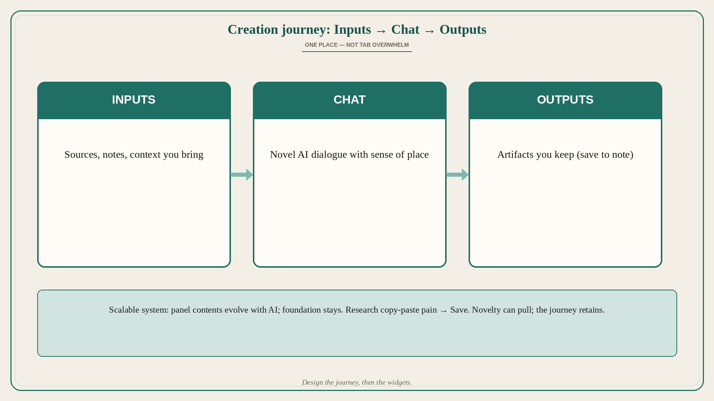

Inputs → Chat → Outputs: one creation journey, three panels
Source: Jason Spielman (@jayspiel_)
original post
What it claims
Designing NotebookLM, Spielman anchored the mental model in the creation journey: Inputs → Chat → Outputs — simple, flexible, clear sense of place for novel AI interactions. The 3-panel responsive design solved “tab overwhelm” (fractured bouncing between tools) by bringing reading, writing, and creation together — few products do all three because juggling them is overwhelming. Scalability was a core principle: panel contents can evolve with AI; the system supports new tools, modes, and workflows without breaking the foundation. User research spotted people copy-pasting from Gemini/ChatGPT into Google Docs — that pain became “Save to note.” Intentional novelty (Audio Overviews) helped spread; many came for AOs and stayed for the rest. He credits a team that made design-driven product decisions possible (shoutout to @joshwoodward for championing the user) and points to a fuller UX write-up on his website.
Why it matters for a PO
AI product POs often ship chat as a floating widget with no place in a journey. Inputs → Chat → Outputs gives users orientation; multi-panel beats tab soup. Research that watches real copy-paste pain beats feature brainstorms. Novelty can be a deliberate acquisition wedge if the core loop retains. Design-driven product space is a leadership choice, not only a designer hobby.
3 takeaways
- Anchor AI UX in Inputs → Chat → Outputs so users always know where they are.
- 3-panel / responsive layout beats tab overwhelm when reading, writing, and creation belong together; design the system to scale modes without rewriting the foundation.
- Watch real workarounds (copy-paste into Docs → Save to note); intentional novelty can pull, retention must hold.
Practice this week
Map your AI feature onto Inputs / Chat / Outputs. Circle where users still bounce to another tab to finish the job. Ship one “save/keep” path for that bounce this sprint. Do not add a novelty surface until the journey has a clear place for it.